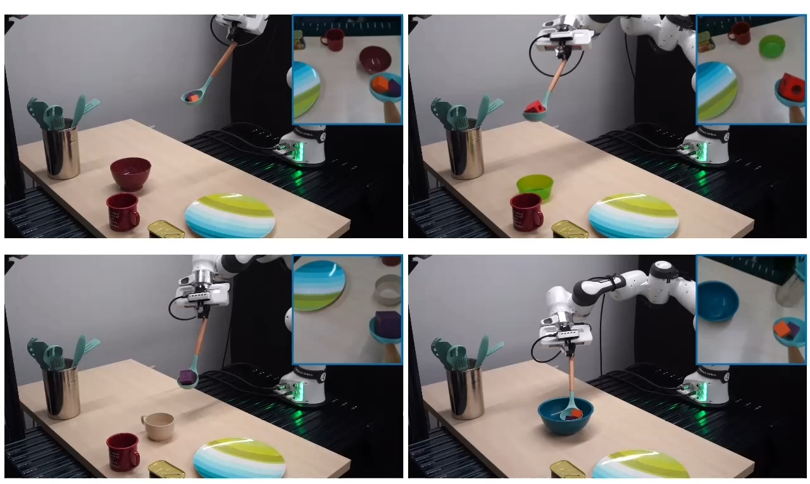

|
Jasmine Shone I'm a current student at MIT interested in ______ In the past, I've done _______ |

|
ResearchI'm interested in computer vision, deep learning, generative AI, and image processing. Most of my research is about inferring the physical world (shape, motion, color, light, etc) from images, usually with radiance fields. Some papers are highlighted. |
|

|
Keypoint Abstraction using Large Models for Object-Relative Imitation Learning
Xiaolin Fang*, Bo-Ruei Huang*, Jiayuan Mao*, Jasmine Shone, Joshua B. Tenenbaum, Tomás Lozano-Pérez, Leslie Pack Kaelbling, ICRA 2025, CoRL LangRob Workshop Best Paper 2024 project page / arXiv By utilizing priors from Vision-language models and image features from large classification models to create a novel keypoint abstraction for robot actions, we generalize effectively across object poses, camera viewpoints, and object instances with only 10 demonstrations. |
Miscellanea |
|
Feel free to steal this website's source code. Do not scrape the HTML from this page itself, as it includes analytics tags that you do not want on your own website — use the github code instead. Also, consider using Leonid Keselman's Jekyll fork of this page. |